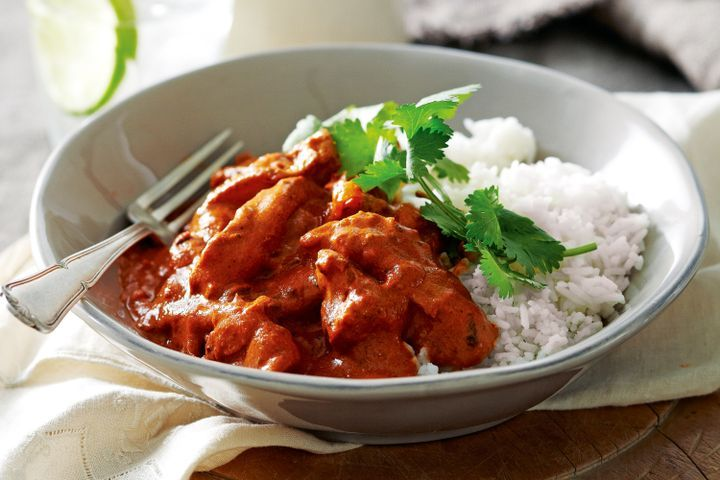

Butter Chicken Recipe

This classic Indian dish is a favourite in Aussie households.
Re-create it at home in a flash.
Don't you just wish you could have some delcious butter chicken without
having to pay through the roof at a restaurant. Well now you can by making
it yourself!
Ingredients
- 1/2 cupp Greek yoghurt
- 2 garlic cloves, crushed
- 3cm pice ginger, peeled, finely grated
- 2 tsp gound cumin
- 2 tsp ground coriander
- 1 tsp garam masala
- 1/3 tsp chilli powder
- 600g chicken thigh cut into 3cm pieces
- 1 tbsp vegetable oil
- 20g butter
- 1 brown onion, halved, thickly sliced
- 410g can tomato puree
- 1/2 cup chicken stock
- 1/2 cup thickened cream
- Basmati rice
- Coriander leaves
Steps
- Place yoghurt, garlic, ginger, cumin, coriander, garam masala
and chilli powder in a glass or ceramic dish. Add chicken.
Stir to coat. Cover. Refrigerate for 2 hours.
- Heat oil and butter in a heavy-based saucepan over medium-high
heat. Add onion. Cook, stirring occasionally, for 3 to 4 minutes
or until softened. Add chicken mixture to pan. Cook, stirring,
for 5 minutes or until chicken just starts to change colour.
Add tomato puree and stock. Cover. Bring to the boil. Reduce
heat to low. Simmer, sitrring occasionally, for 10 minutes
or until chicken is tender and mixture has thickened slightly.
- Stir in cream. Simmer for a further 5 minutes or until heated
through. Serve with steamed rice and coriander leaves.
Return to main page